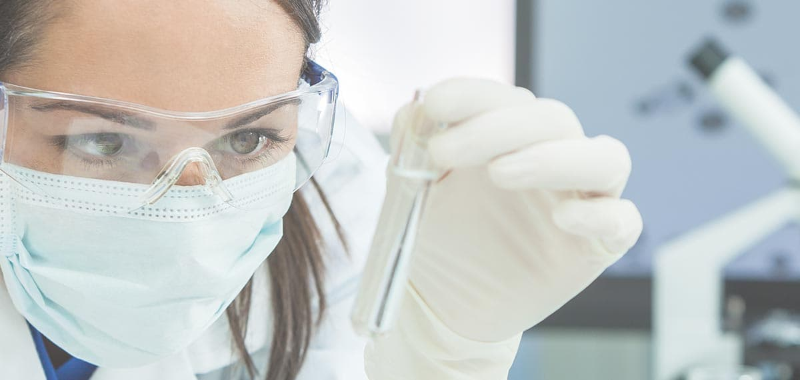
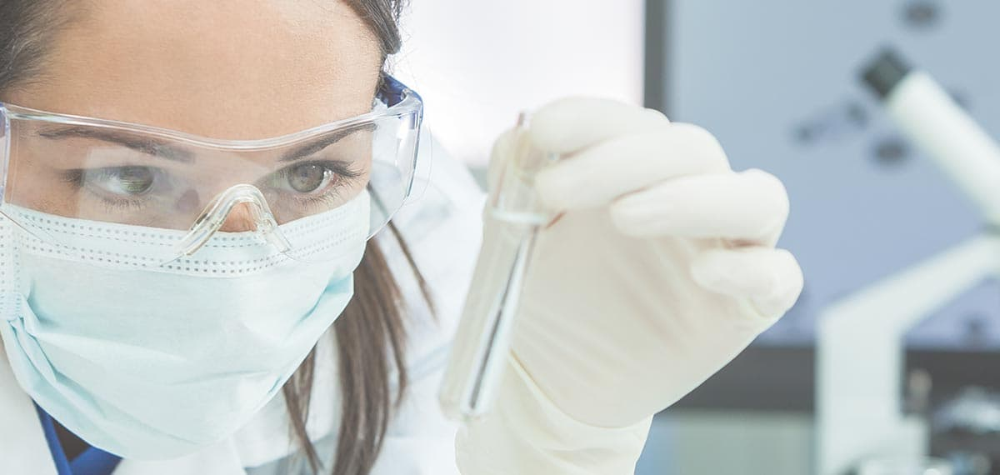

是探討生物體中所有小分子代謝物的變異，藉以呈現生物體因應生理、病理或是基因變異與環境因子所造成的影響。有別於基因體學、轉錄組學及蛋白體學，代謝體為最接近生物表現型的一門體學，並且代謝體顯示的是樣本(細胞/組織/血液/尿液)特定時間內的生理機能，因此分析其最重要的目的在於可以直接透過分子結構說明生理狀態的變化，並可從數據中找尋與特定疾病相關之生物標記，作為精準醫療上疾病診斷與預測之依據。
雷文虎克微生物培養體實驗室著重於人類腸道微生物之培養、分離、純化、鑑定以及保存，具備完善的絕對厭氧菌培養之操作設備及專業的實務經驗，結合微生物相基因體數據分析，針對具有促進健康潛力的腸道厭氧菌 (次世代益生菌) 進行分離純化並建立特定菌種之全基因體資料庫，同時也建立本土健康人的腸道菌資源庫及其蛋白質圖譜資料庫，將有助於開發用於改善人類疾病的次世代益生菌。
無菌小鼠是研究微生物跟宿主交互作用的利器。透過殖入特定微生物或菌叢 (microbiota) 於無菌小鼠腸道，可建立含特定菌小鼠模型 (gnotobiotic mice model) ，包括來自人類菌叢的人源性微菌小鼠 (human microbiota-assciated mice)。相較於一般實驗小鼠，使用無菌小鼠可排除宿主本身腸道菌叢的干擾，可探討特定腸道菌叢對宿主生理、健康與疾病表型的影響。
無菌小鼠亦可做為測試腸道菌調控小分子與生物製劑活性的藥物篩選平台。無菌鼠與含特定菌小鼠的飼養與操作必須全程無菌，雷文虎克具有完善的無菌鼠飼養系統、嫻熟的操作技術與嚴謹的微生物監控流程，可穩定飼養與操作無菌C57BL/6小鼠。雷文虎克提供C57BL/6無菌小鼠殖入特定微生物叢 (microbiota) 服務、無菌小鼠與含特定菌小鼠操作服務，以及相關客製化技術服務等。